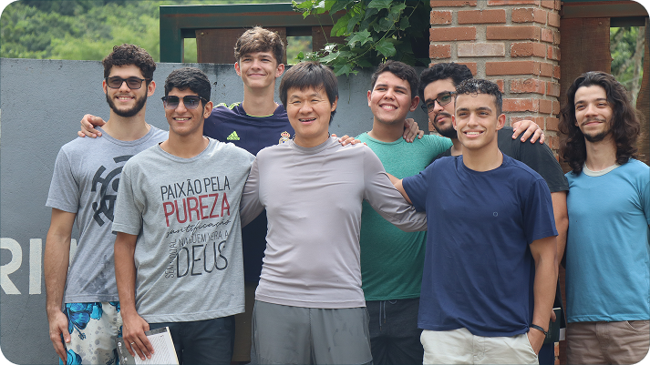

<link rel="preconnect" href="https://fonts.googleapis.com">
<link rel="preconnect" href="https://fonts.gstatic.com" crossorigin>
<link href="https://fonts.googleapis.com/css2?family=Inter:ital,opsz,wght@0,14..32,100..900;1,14..32,100..900&display=swap" rel="stylesheet">
<link rel="stylesheet" href="styles.css">
<meta charset="UTF-8">
<meta name="viewport" content="width=device-width, initial-scale=1.0">

 

<section class="oque-fazemos">
  <div class="container">
    <div class="texto">
      <h2>O que nós fazemos</h2>
      <p>
        Em parceria com a Liferay, uma empresa de tecnologia com sede em Recife, estabelecemos um Instituto de Tecnologia e Teologia onde <b>20 jovens se envolvem em estudos em tempo integral ao longo do ano.</b>
      </p>
      <p>
        Este programa inovador vai além da educação convencional, oferecendo uma abordagem holística que integra <b>treinamento teológico com habilidades práticas para a vida.</b>
      </p>
    </div>
    <div class="imagem">
      
      <p class="legenda">Turma 4 - Instituto SDG</p>
    </div>
  </div>
</section>

